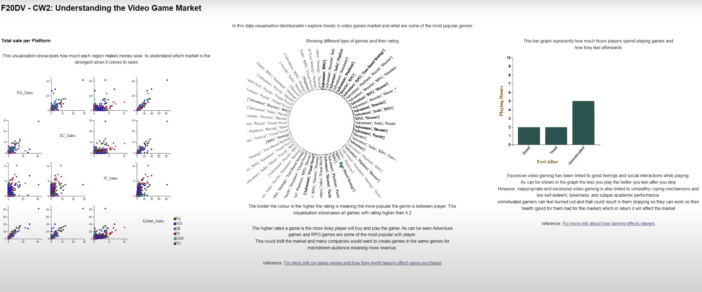

Home
About me
Portfolio
Data Visualisation
Project
During univerity I studied Data Visualisation where we focused on Javascript in particular d3 library.
One of the projects that I worked on was creating a visualisation for video games market, We were given freedom to do whatever we want. As someone who is interested in game development I thought it would be interesting to make this the theme of my project.
I also took accessibility into consideration.The colour black for the text was picked because it contrasts with the white background. This was checked on the WebAIM website for accuracy. Next the colours used in the Correlogram with scatterplot graph were all checked in the WebAIM website to make sure that users can tell the difference contrasting with the white background.
